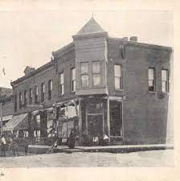

Remington's Gastropub
– take a short drive to a tasteful destination.
Bacon Wrapped Meatballs
11
Three tender Italian meatballs wrapped in crispy cherrywood bacon – finished with your choice of wing sauce.
Spicy Battered Cauliflower
10
Aleppo pepper battered cauliflower served with crumbled blue cheese dressing.
Chips 'N' Salsa
5
Homemade salsa served with warm, lime-pepper tortilla chips.
Bavarian Soft Pretzels Bites
8
Served with our warm beer cheese.
Hula Pork Flatbread
10
Ginger teriyaki bbq shredded pork, applewood ham, pineapple, smoked cheddar, green onion, cilantro.
Basil Pesto Hummus
10
Tahini hummus dip, basil pesto, veggies, grilled naan bread.
Crab Cake Sliders
17
Two ‐ three-ounce, wild, jumbo blue swimmer crab cake, chipotle mayo, oven roasted tomato, organic greens.
Beer Battered Curds
10
Loaded basket of squeaky beer battered white-cheddar curds, served with home-made ranch sauce.
Chicken Harrissa Dip
12
Tender white-meat chicken blended with cream cheese, cheddar and Romano cheese seasoned with chipotle and cayenne pepper and flame-roasted green chiles; served with your choice of Naan bread, lime pepper white corn tortilla chips, or veggies.
Ooey Gooey Delicious Mac N Cheese
6
Four different cheeses and beer, mixed in with Cavatappi Pasta.
Small ‐ 6 | Large ‐ 9 |
Bacon ‐ 4 | Pulled Pork
‐ 3 | Crab Cake ‐ 4 | Shrimp ‐ 5 |
Grilled Wedge Salad
8
Seasoned and lightly grilled iceberg lettuce half, pickled red
onions, roasted red tomatoes, cherrywood bacon, house croutons,
crumbled bleu cheese with bleu cheese dressing.
blackened
chicken‐ 3 | Wild caught blackened red argentine shrimp‐
7|
Chopped BBQ Chicken
12
Chopped organic spring greens, garlic bbq rubbed grilled chicken, roasted corn elote salad, jack cheese, green onions, cilantro, heirloom tomatoes, tortilla strips, buttermilk herb ranch.
Side Salad
6
Chopped organic spring greens, shredded vegetables, tomato, red onion and your choice of dressing.
The Famous Mr. Peterson
5.50
Cup of Soup with half sandwich (choose from grilled cheese, ham &
cheese, or BLT).
With full sandwich ‐ 1
California Wrap
12
Grilled blackened chicken breast, fresh guacamole, pepper-jack
cheese, lettuce, organic greens, tomato, and chipotle ranch inside a
spinach tortilla.
**We have seen an increase in chicken prices over the last few
months; we will monitor and adjust as necessary**
Pulled Pork Sandwich
11
Hardwood smoked shredded pork, house-made Kansas City blackberry sauce, topped with corn elote, pickled red onion, and slaw on a glossy-top roll.
The Classic Grilled Cheese
10
American, smoked cheddar, provolone, whipped brie, sliced tomato, sandwiched between grilled sourdough
Turkey Avocado Club or Wrap
12
Carved turkey, applewood bacon, organic greens, tomato, smoked gouda, guacamole, sandwiched between grilled sourdough or inside a spinach tortilla wrap with chipotle mayo.
The Classic Towner
10
A smaller version of our Classic 'Sconsin; ¼ lb Angus beef burger ‐ LTPO; cheddar, jack and swiss cheese.
The Vegetarian JU-JU Burger
12
Created for Barb Basketball Coach, Ju-Ju ‐ this three point grain veggie burger is topped with fried green tomatoes, guac & drizzled with chipotle ranch.
Classic Sconsin'
13
Smoked aged cheddar, jack cheese, swiss, LTPO, crusty glossy-top roll.
Peanut Butter Bacon Jam
14
Whiskey Acres Bourbon Bacon Jam & creamy peanut butter served with greens.
Smokehouse
14
Hardwood smoked pork with slaw, smoked gouda cheese, drizzled with Texas Honey BBQ and served on a pretzel bun
Chicken 'n' Waffles
12
Lighlty dredged fried chicken breast, on a maple infused Belgium
waffle, served with chipotle maple syrup and sweet potato fries.
additional maple infused waffle ‐ 4
**Chicken prices in industry have gone up due to shortages, we will
continue to monitor pricing**
Fish or Shrimp Tacos
16
White corn tortillas, blackened wild barramundi or wild Argentina shrimp, organic greens, pickled red onions, cilantro, jack cheese, mango pico, guacamole, sour cream, and drizzled with chipotle ranch.
Fried Chicken Sandwich
12
Blackened fried chicken, pickled red onions, jalapenos, smoked chili white bbq sauce, house pickles, glossy bun.
Whipped Brie & Ham Sandwich
12
Blackened fried chicken, pickled red onions, jalapenos, smoked chili white bbq sauce, house pickles, glossy bun.
Gluten Free Breaded Chicken Chunks
9
Small ‐ 9 | Large ‐ 15
Choose from any of our wing sauces
***Chicken prices will vary
week to week due to the chicken shortage in industry***
Hardwood Smoked Wings
9
1/2 lb ‐ 9 | 1 lb ‐ 15
Sweet Sauces: Kansas City Blackberry BBQ ‐ Texas Honey BBQ
‐ Ginger Teriyaki BBQ;
Spicy Sauces: Carolina Reaper
Amber Ale BBQ ‐ Sriracha Honey Glaze ‐ Thai Curry ‐
Carolina Mustard;
Dry Rubs: Boston Butt Rub ‐ Garlic
Romano Rub ‐ Ancho Chili Lime Pepper Rub;
***We have seen significant price increases on our wings from
various distributors; we will continue to monitor pricing and adjust
as necessary***
Name
price
The Bougie Amaretto Sour
8
This is the best damn Amaretto Sour you'll ever taste! A mix of Amaretto, cask strength bourbon, fresh lemon juice & blended with egg whites for a nice, silky, frothy cocktail.
Malta Mayhem Mule
8
A tad more distinguished for the more experienced palate. Citrus vodka, aromatic bitters, fresh lime juice topped with authentic ‐ ginger beer; made with ginger root, agave syrup and a little chili peppers.
Fog Cutter
8
The “Long Island of Exotic Drinks” but Tiki Style! Bacardi Rum, Gran Gala Liqueur, Tanqueray Gin, OJ, fresh lemon, Orgeat, topped with Aperol.
Whiskey Rebellion
7
Whiskey Acres Rye Bourbon and Pimms No. 1 is the perfect combination for an Old Fashioned take on classic flavors.
The No. 1 Pimms Cup
8.5
It's Pimm's o'clock somewhere. This traditional liqueur combines herbal botanical s, caramelized oranges & warm spices ‐ we merge it with Hendrick's Gin and top with authentic Ginger Beer.
Parenti's Port Revival
8
This is not your grandfather's Port. Bin 27 Port Wine offers a ruby rich color with an intense fruity nose and spicy notes. Combine this Port with Citrus Vodka, Elderflower Liquor and lemonade and we can call it a Port Revival. No tweed or ascot required to sip on this refined cocktail.
The French Gimlet
8
Prairie Organic Vodka, St. Germaine's Elderflower and fresh lime juice. Sweet piece of heaven.
Spicy Jalapeno Margarita
8
Smooth & smokey Mezcal balanced with the sweet, floral taste of Elderflower Liqueur, fresh limes, jalepeno's and a dash of FIREWATER HABANERO TINCTURE bitters. Not for the faint of heart but if you love a little heat, you'll fall in love.
Name
ABV
served in
price
Exile Beatnik Sour
5.7%
12oz bottle
5
Unfiltered and extra pale with a pure white crown, the refreshing lactic tartness puckers your palate.
Lakefront Riverwest Amber
5.6%
12oz bottle
5
Pours a brilliant amber with a bubbly off-white head. Aromas of American hops mingle with a slight floral character from the German lager yeast.
Name
ABV
served in
price
Alaskan 586
7.5%
16oz draft
6
Double dry hopped imperial IPA brewed using a new experimental 586 hop from Barth Haas. This beer has an upfront mango flavor and creamy orange finish, similar to an Orange Julius.
Athletic Run Wild NA IPA
12oz can
5
The ultimate session-able IPA. Perfectly balanced and brewed with organic Vienna malt and a blend of five Northwest hops. The approachable bitterness and classic piney, citrusy aroma blend perfectly with the subtle, yet complex malt profile.
Blue Moon Belgian White
5.4%
12oz Can
4.5
Boulevard Tiki Slam
4.2%
12oz can
5
Bright, tangy and tart, it delivers a punch of juicy tiki vibes. Guava, pineapple & orange combo tastes like island life.
BuckleDown Hideout
6%
16oz can
6
Blood orange Hazy IPA.
Dogfish Head Hazy-O!
7.1%
12oz Can
6
Our Oooohhh so juicy Hazy IPA brewed with 1. malted, 2. rolled, 3. naked oats & 4. Oat Milk to amplify the haze & silky mouthfeel. Hazy-O! is liberally hopped to deliver juicy tropical notes of citrus, mango & pineapple.
Dos Equis Lime & Salt
4.2%
12oz can
5
Dos Equis Lager has long been consumed with lime and salt. That's why we're bringing the ritual of adding lime and salt into a can so you don't have to.
Dos Equis Ranch Water
4.5%
12 oz can
5
Sparkling seltzer - 90 calories per can and has a crisp, clean finish with a subtle hint of Lime. At 4.5% ABV, it is naturally flavored which delivers a light, balanced taste for when regular refreshment won't cut it.
Finch Tacocat
5.0%
12ox can
5
Session sour with a nice Citrus Aroma, is Mildly Tart, and has pleasant notes of Peach, Tangerine, and White Grapes.
Firestone Walker 805 Honey Blonde
4.7%
12oz can
5
A light and refreshing blonde ale with a subtle malt sweetness balanced by a touch of hops; clean, fresh finish.
Firestone Walker Cinnamon Dolce Nitro Stout
6%
12oz can
5
Brewed at the Propagator ‐ Milk stout conditioned on whole Madagascar vanilla beans and cinnamon sticks for a rich profile reminiscent of a cinnamon dolce latte.
Firestone Walker Mind Haze
6.25%
12oz can
5
Juicy yet balanced, hazy yet lasting, and loaded with an imaginative array of tropical hop flavors.
Guinness Draught Nitro
4.2%
16oz can
6
Nitrogenized Guinness is a dark stout beer that is brewed with Irish barley, brewers yeast, hops and water.
Haymarket Fest Bier
5.8%
12oz can
5
German Style Marzen Lager
Haymarket Speakerswagon®
5%
12oz can
5
Start with this crisp, straw colored lager brewed with imported pilsen malt, Saaz hops and authentic cold fermenting lager yeast
Leinenkugel Chocolate Dunkel
5.5%
12oz can
5
Leinenkugel's winter seasonal Chocolate Dunkel combines the refreshment of a crisp dark lager with just the right amount of tasty chocolate flavor. Chocolate Dunkel's cocoa crispness and smooth finish is perfect for cozying up by the campfire on chilly winter nights.
New Holland Tangerine Space Machine
6.8%
12oz can
5
New England Style IPA with Galaxy & Citra hops; fruit forward hazy IPA.
New Holland The Poet
5.8%
12oz can
5
Oatmeal Stout. Rich, roasty flavors and hints of coffee and chocolate; a creamy brew of epic proportions.
Noon Whistle Gummy Vortex
7.5%
16oz can
7
Hoppy, hazy and juicy! This NE IPA is loaded with Simcoe and Citra Hops. It has strong citrus flavors and a pleasantly fruity, yet earthy herbal and piney aroma.
Noon Whistle Hop Prism Turquoise
7.8%
16oz can
7
Citra hopped IPA that holds a nice golden color with citrus fruit and tropical notes.
Noon Whistle Leisel Weapon
5.2%
12oz can
5
Obscurity + Forge The Farrier
7.5%
16oz draft
7
*KRISTEN FAVORITE****Paying homage to The Forge owner/brewer JD and his illustrious career as one of the best farriers in the country, this Imperial Porter matches that standard! This porter features rich coffee up front from Soul Loco Coffee Roasters and finishes with smooth vanilla as you conti... more
Odd Side Hazel's Nuts
10%
12oz can
9
A nice Salty, Sweet Hazelnut Treat with a lil kick of Bourbon to finish it off!!
Odd Side Mayan Mocha
6%
12oz can
5
Stout brewed with Coffee, Cinnamon, Nutmeg & Habaneros. Inspired by a Mexican hot chocolate.
Odd Side Strawberry Fruitsicle
4.5%
12oz can
5
Juicy, fruity, slightly tart ale brewed with lactose, strawberries added.
Revolution Freedom Of Speach
4.5%
12oz can
5
Session sour joins the sweet, juicy flavor of fresh peach to a dry, lightly tart body. Easy drinking and lower in alcohol so you can exercise your right to refreshment.
Revolution Rev Pils
5%
12oz can
5
A Rev Pils is a traditional German pilsner that we've brewed with a slightly American approach.
Sam Adams Just The Haze
0%
12oz can
5
Wheat and oats amplify the body, while Citra, Mosaic, Sabro, and Cascade hops impart a fragrant profile of pineapple, peaches, and grapefruit. Wicked!
Scorched Earth Hickster
4.8%
12oz can
5
The skinny jean, tight fitting Hipster's cousin; The Hickster; loose, relaxed, husky. pale-straw color, with a biscuity malt sweetness and whisper of citrus
SweetWater Sweet Water Almond Milk Stout
4.4%
12oz can
5
Super stouty and nicely balanced, this cow-less coup is an authentic tasting milk stout featuring flavors of roasted coffee, milk, and dark chocolates. Almond flavor with some roasted malts smooths it all out for a whole new off the mainstream brew.
White Claw Black Cherry
5%
12oz can
5
White Claw Mango
5%
12oz can
5
Name
ABV
served in
price
Canyon Road Winery Chardonnay
12.5%
6oz glass
6
This medium-bodied wine has notes of crisp apple and ripe citrus fruit with a hint of cinnamon spice.
Canyon Road Winery Moscato
9%
6oz glass
6
Inspired by the scenic roads that wander through California's stunning wine country Rafael Jofre crafts beautifully structured wines that express true varietal.
Canyon Road Winery Pinot Grigio
11.5%
6oz glass
6
This medium-bodied wine has hints of green apple, citrus, white peach and floral blossom.
Canyon Road Winery Sauvignon Blanc
13%
6oz glass
6
Light to medium-bodied wine with hints of ripe citrus, melon, and a refreshing crisp finish.
Whitehaven Sauvignon Blanc
12.5%
6oz glass
10
Full-flavored and medium-bodied with notes of peach, gooseberry and ripe tropical fruit. Showcasing a brilliant straw color.
Name
ABV
served in
price
Canyon Road Cabernet
13%
6oz glass
6
This wine has flavors of dark fruit such as blackberries and plum, layered with sweet aromatics of caramel and brown spice.
Canyon Road Pinot Noir
13%
6oz glass
6
Rich, fruit forward cherry flavors, soft tannins, a medium body and a smooth velvety finish.
Canyon Road Winery Merlot
13%
6oz glass
6
With a soft and elegant mouth-feel, this wine has deep flavors of rich cherries and jammy blackberries, followed by hints of vanilla and spice.
Name
ABV
served in
price
Magners Irish Berry
4%
12oz bottle
5
Magners is a mix of strawberry, raspberry and blackcurrant fruit notes on a fermented pear base. A sweet fruity cider with a crisp taste.
Magners Irish Pear
4.5%
12oz bottle
5.5
The only fruit we use in Magners Pear Cider is pear.
Remington's Gastropub was established in September of 2016, knowing that the popularity of gastropubs has grown dramatically in the restaurant industry in recent years. This restaurant revolution is happening outside of the country's largest cities — trickling down to smaller towns all across the USA, like rural Malta, IL, home of Remington's Gastropub.
The term “gastropub” was coined in 1991, when David Eyre and Mike Belben took over The Eagle pub in Clerkenwell, London. Traditionally, British pubs were drinking establishments and little emphasis was placed on the serving of food. If pubs served meals they were usually basic cold dishes such as a ploughman's lunch. In South East England (especially London) it was common until recent times for vendors selling cockles, whelks, mussels and other shellfish to sell to customers during the evening and at closing time. Many mobile shellfish stalls would set up near pubs, a practice that continues in London's East End. The concept of a restaurant in a pub reinvigorated both pub culture and British dining, though it has occasionally attracted criticism for potentially removing the character of traditional pubs. “Pub grub” expanded to include British food items such as steak and ale pie, shepherd's pie, fish and chips, bangers and mash, Sunday roast, ploughman's lunch, and pasties. In addition, dishes such as hamburgers, chips, lasagne and chili con carne are now often served.
The line between restaurant and pub is becoming more and more blurred as masses of new places begin catering to an increasingly food aware crowd; patrons are enjoying the unique culinary options and casual atmosphere offered at gastropubs. Remington's Gastropub brings an incomparable and well-crafted gastropub to the heart of corn and tractor country. With a vast craft beer selection, a few dozen wine varieties, signature “Mad Men” and “Prohibition Era” inspired cocktails, Remington's has the goods to back it up—in the form of tasty pub staples, albeit, with a bit of culinary flair. Armed with the overarching goal to serve the best in a no-frills, affordable, approachable manner, guests are invited to sit down, have a beer, a few bites, and stay a while.
Have questions? Want to know if we have something on tap, or in the kitchen? Or maybe you'd like to let us know how your last visit was? Whatever the case – we love hearing from you! Give us a call or fill out the form below.